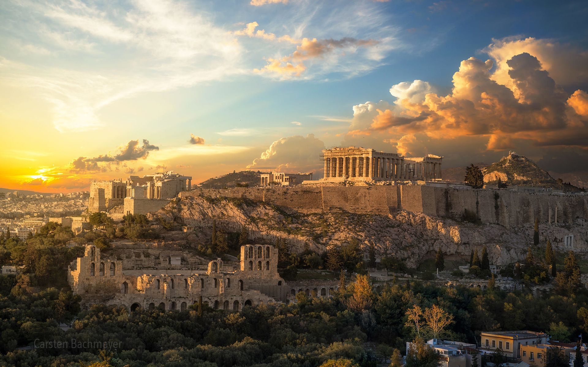
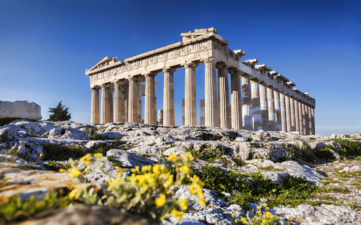
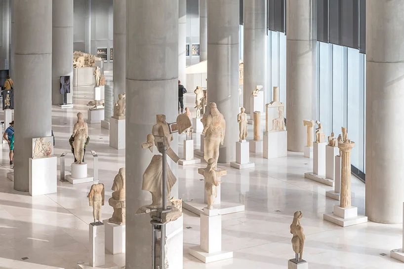
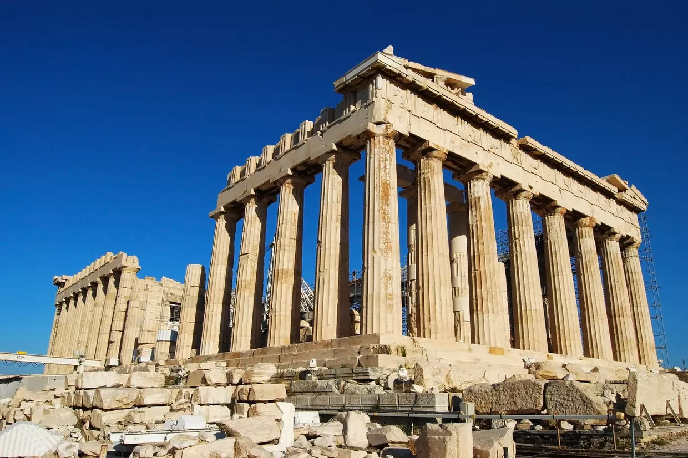
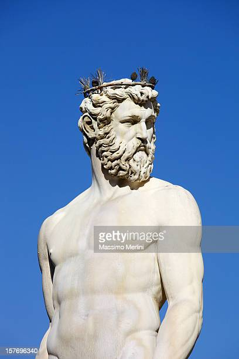
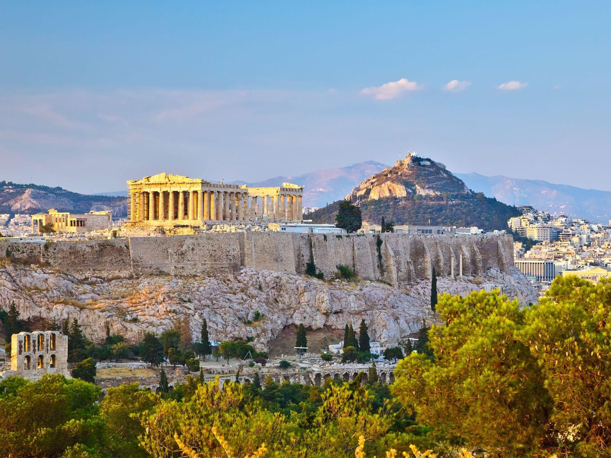

Athene,Ville des merveilles


Un lieu unique au monde
Athènes est une ville de Grèce dont elle est la capitale. Elle compte 664 046 habitants (2011) et son agglomération en compte plus de trois millions.
Grâce à son histoire antique, Athènes est l'un des centres touristiques les plus importants au monde.
Le Parthénon (temple consacré à Athéna), situé sur l'Acropole (le plateau autour duquel Athènes a été construite) est l'un des lieux les plus visités. Il y a aussi le temple d'Athéna Nikè (Athéna « victorieuse »). Il porte ce nom car Athènes fut victorieuse d'une guerre contre les Perses.
lieux a decouvrir a Athene

Le musée de l’Acropole
Le musée de l’Acropole est une visite incontournable à faire à Athènes.
Si vous le pouvez, je vous conseille d’ailleurs d’aller le visiter avant l’Acropole, afin de bien remettre en perspective le contexte et l’histoire du lieu. Le musée regroupe tous les vestiges découverts sur le site de l’Acropole, soit près de 4 000 pièces.
Il est extrêmement bien conçu. Tout au long de votre visite, vous aurez une vue magnifique sur l’Acropole. Et pour conclure en beauté, n’hésitez pas à aller boire un verre sur la terrasse du café au dernier étage pour profiter du panorama.

L’acropole d’Athènes
Impossible de ne pas citer parmis les lieux à visiter absolument à Athènes sans parler de son monument emblématique:l’acropole d’Athènes.
Inscrit au patrimoine mondial de l’UNESCO, dominant la capitale, c’est l’un des sites antique les plus visités de toute la Grèce et l’attraction touristique principale d’Athènes.
Érigé au sommet du site, le Parthénon est le monument le plus connu de l’Acropole. Construit au V ème siècle avant J.C, en même temps qu’une bonne partie des autres bâtiments à l’initiative de Périclès, le temple est dédié à Athéna. Il est considéré comme le premier édifice de l’Antiquité à avoir été construit entièrement en marbre et pèse environ 20 000 tonnes.

L Agora
Venez découvrir la mythique Agora en Grèce et vivez la magie de ses anciennes ruines. Immergez-vous dans la culture grecque et découvrez l'incroyable histoire qui se cache derrière ces murs antiques.
Explorer la ville de l'antique Agora vous transportera instantanément à l'époque de la Grèce antique. Visitez les ruines de la détente, le marché et les magasins.
Voyagez à travers le temps et découvrez ce qui se cache derrière ces vestiges.
Apprenez-en plus sur les anciennes croyances grecques et admirez les fontaines et les sculptures qui ornent encore la ville.
Vivez l'expérience unique de découvrir un vrai trésor archéologique qui vous guidera à travers l'histoire de la Grèce. Profitez de votre séjour pour visiter les musées et les galeries qui gardent les souvenirs de ces temps anciens. Admirez aussi les plus beaux paysages qui entourent la ville et promenez-vous dans les compagnies de théâtre qui rappellent les plus grands looks du spectacle antique.Votre voyage à Agora en Grèce sera une expérience mémorable que vous n'oublierez jamais. Vivez l'histoire ancienne et découvrez tout ce que cette destination romantique a à offrir et profitez de ce voyage extraordinaire !

Le jardin national et le parc du Zappéion
Si vous souhaitez bénéficier d’un peu de fraîcheur et d’ombre lors de votre séjour à Athènes, je vous conseille une balade dans le jardin national et le parc du Zappéion. Les 2 constituent en fait un seul et même grand parc, le poumon vert de la ville.
C’est le lieu idéal pour faire une pause entre 2 visites et se détendre loin de la foule.
Le parc se trouve entre le stade des panathénées et la place Syntagma.